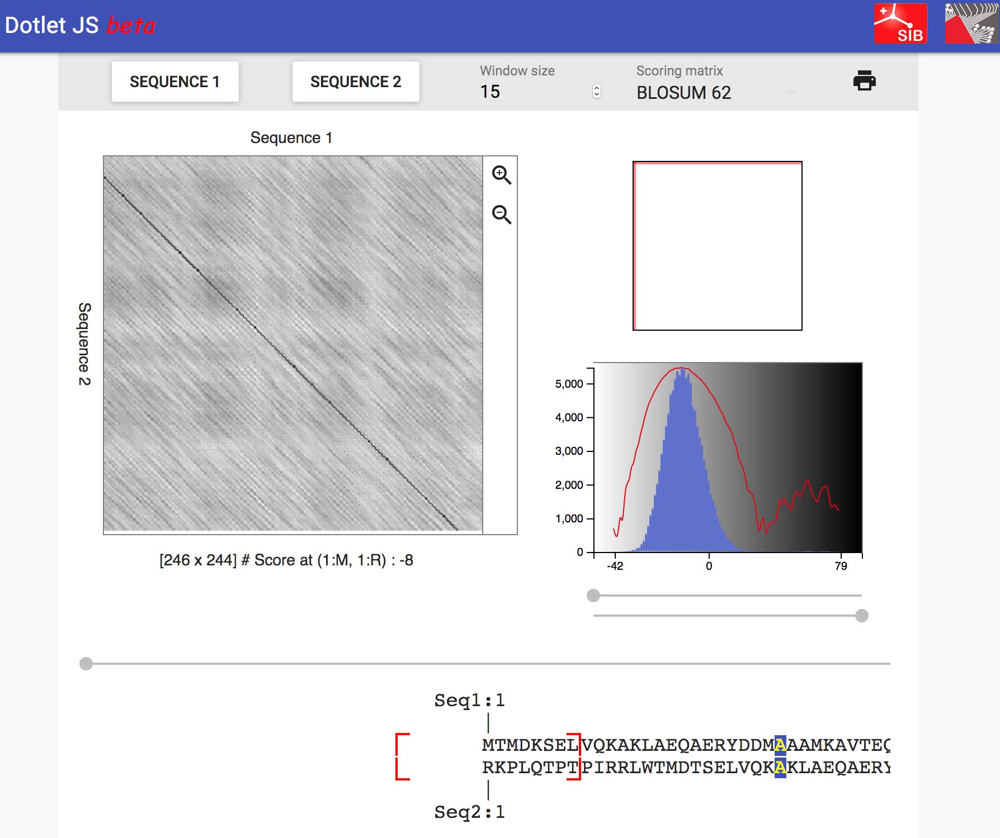
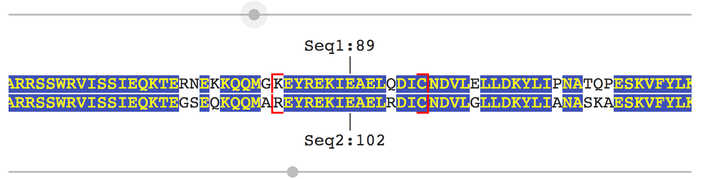
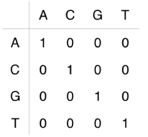
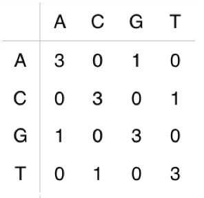
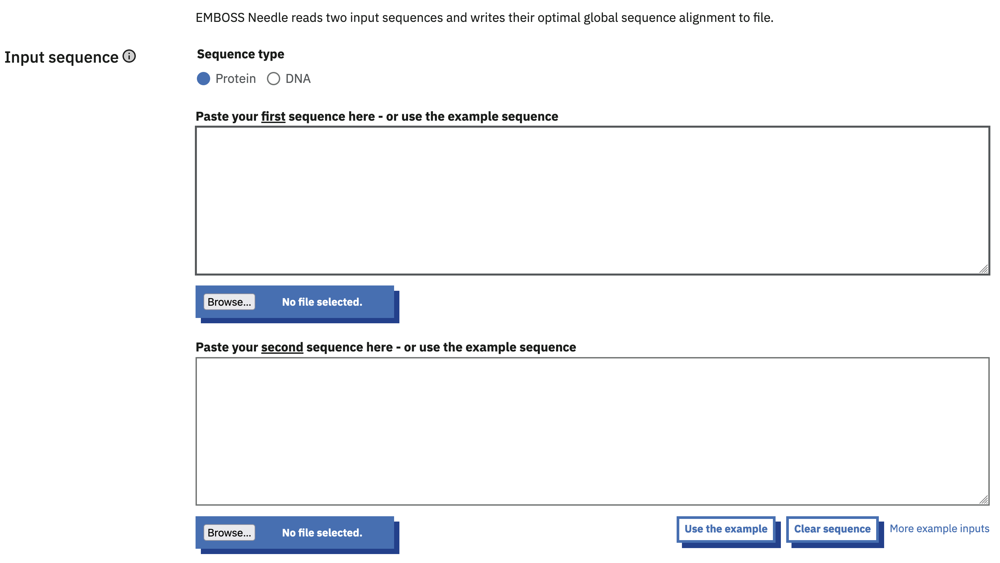
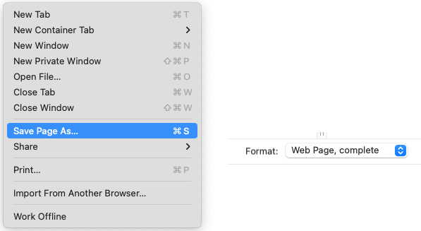
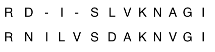

BIO504 - TP 2
Comparaison et alignements de séquences
1 Comparaison et alignements de séquences
1.1 Objectifs du TP
- Comparer deux à deux des séquences de gènes, d’ARNm, de CDS et de protéines
- Expérimentation avec l’outil graphique : Dotlet pour l’exploration visuelle de séquences
- Principes des calculs de score
- Savoir aligner des séquences manuellement
- Réalisation d’alignements par paires avec les outils de l’EMBL-EBI
On utilisera de nouveau les gènes de la famille des hémoglobines comme modèle d’étude.
Après une analyse détaillée de la séquence annotée NG_000007 correspondant à la localisation chromosomique 11p15.5 pendant la première séance, vous avez dû trouver les séquences des gènes dans l’ordre 5’ - 3’ du brin codant :
- HBE1 (\(\epsilon\) 1),
- HBG2 (\(\gamma\) G),
- HBG1 (\(\gamma\) A),
- HBD (\(\delta\)),
- HBB (\(\beta\))
Les 5 gènes codants forment la famille des \(\beta\)-globines.
Vous avez pu également voir que ces 5 gènes de la famille \(\beta\) codent tous pour des ARNm de tailles différentes et qu’ils sont eux-mêmes de tailles différentes. Pourtant toutes les CDS et par conséquent les protéines produites sont de même taille. Cependant à ce stade, nous ne pouvons pas dire si les séquences des 5 ARNm et des 5 protéines sont identiques entre elles ou non. Cela va être un des objectifs des prochaines séances de cette série de travaux pratiques…
1.2 Comparaison graphique de séquences 2 à 2
1.2.1 Prise en main du logiciel Dotlet
Nous utiliserons le logiciel en ligne développé par Marco Pagni et Thomas Junier au SIB - Swiss Institute of Bioinformatics. Il a été conçu pour permettre d’accéder en ligne à un logiciel de dotplot dans le cadre d’un cours de bioinformatique.
- Accédez au programme en ligne dans Firefox avec le lien suivant dotlet

- Découvrez l’interface en jouant avec les commandes de la fenêtre
- Indiquez le rôle de chaque bouton du bandeau supérieur
- Déterminez la fonction des 2 fenêtres
- Agissez sur les curseurs sous la fenêtre, que se passe-t-il ?
- Quelle est l’intérêt des lignes de séquences sous les fenêtres ?

1.2.2 Analyse des séquences des hémoglobines de la famille \(\beta\)
En utilisant les séquences HBB adéquates et vos connaissances sur l’organisation des séquences, utilisez dotlet pour visualiser les exons et les introns
Si vous ne l’avez pas fait, vous devrez aller chercher les séquences FASTA nécessaires. Pour cela reportez-vous à la procédure indiquée au TP1
- De quelle(s) séquence(s) avez-vous besoin ?
- Utilisez la technique de votre choix pour récupérer les formats FASTA des fichiers requis
- Comment apparaissent les exons ? Les introns ?
- dotlet affiche également les séquences en dessous de la fenêtre principale
Utilisez les curseurs pour visualisez les jonctions exon/intron
Choisissez maintenant les séquences HBB adéquates afin de pourvoir visualiser les 5’ et 3’ UTR
- De quelle(s) séquence(s) avez-vous besoin ?
- Utilisez la technique de votre choix pour récupérer les formats FASTA des fichiers requis
- Utilisez les curseurs des séquences pour afficher la région terminale du 5’UTR, calculez sa taille
- Faites de même pour la région initiale du 3’UTR
- Retrouvez-vous les longueurs calculées lors du TP1 ?
Réalisez le dotplot de HBB avec HBD, puis HBB avec HBE1 en utilisant les séquences protéiques.
- Que vous faut-il pour classer ces alignements l’un par rapport à l’autre ?
1.3 Comparaison numérique de séquences
1.3.1 Calculs de scores
- En vous basant sur la méthode vue en cours (voir CM2), calculez le score de l’alignement global des deux séquences nucléotidiques suivantes
(C’est un alignement arbitraire sans indel, il ne s’agit pas pour le moment du meilleur alignement entre ces deux séquences):Séquence 1: ACACACTA Séquence 2: AGCACACA Calculer les scores de l’alignement en utilisant - une matrice d’identité
- une matrice 3 scores


Score = ? Score = ? - Répondez aux questions suivantes:
- Quel est selon vous le meilleur score ?
- Donnez le score maximal pour chaque cas ?
1.3.2 Manipulation des matrices d’alignement
Déterminer maintenant le meilleur alignement global possible ?
- Commencez par déterminer l’alignement global optimal entre les deux séquences nucléotidiques ACACACTA et AGCACACA avec la matrice d’identité sans pénalité d’indel.
RAPPEL : Vous écrirez d’abord la matrice de conversion basée sur la matrice de substitution comme présenté dans le cours (voir CM2); puis vous recalculerez cette matrice avec les contraintes suivantes :
\(S_{(i,j)} = max(S_{(i-1,j-1)} + S_{conv(i,j)}, S_{(i-1,j)} + p, S_{(i,j-1)} + p)\)
avec : \(S_{conv(i,j)}\) = Score dans la matrice de substitution
p = pénalité, tout en remplissant la matrice de trace.</tbody>Alignement d’identité sans pénalité :
séquence 1 :
séquence 2 :
1.4 Alignement des hémoglobines \(\beta\) avec l’outil needle
Les globines sont toutes impliquées dans le transport ou le stockage de l’oxygène. Ce sont des protéines homologues ainsi que les gènes qui les codent. Vous allez maintenant analyser la similarité des protéines constituant la famille \(\beta\).
Vous allez commencer par comparer l’ensemble des séquences des hémoglobines 2 à 2 en utilisant un logiciel d’alignement par paires.
La question que nous nous posons étant de savoir à quel point les séquences à étudier sont semblables, vous allez utiliser un algorithme d’alignement global : l’algorithme de Needleman et Wunsch.
L’outil permettant d’appliquer cette méthode d’alignement est EMBOSS needle :

Commencez par comparer la globine HBB avec elle-même (Si vous ne les avez pas déjà à disposition, toutes les séquences nécessaires sont disponibles dans le fichier Docs Annexes > A3: Les séquences HB).
- Que devez-vous faire pour obtenir l’alignement ?
Cliquez sur le bouton More options…
Notez les valeurs des différents paramètres SANS les modifier
Enfin cliquez sur le bouton Submit.
- Décrivez la composition de la page de résultats qui s’affiche
- Quel est le degré de similarité des séquences ?
- Quel est le score ?
- Quel est le pourcentage d’identité ? De similarité ?
- Quel est le pourcentage de gap ? Pourquoi un tel pourcentage ?
Vous allez maintenant faire tourner le programme autant de fois que nécessaire en faisant les ajustements requis pour comparer HBB aux autres protéines de la famille \(\beta\). Vous avez déjà les informations nécessaires pour remplir la colonne HBB versus HBB.
Vous garderez les paramètres avec le réglage par défaut pour tous les alignements soit :
matrice BLOSUM62, Gap Open 10 et Gap Extend 0.5.Pour le vérifier, cliquez sur le bouton More options…
Remplissez le tableau ci-dessous :
|
BLOSUM62 |
|||||
| Protéine | HBB | HBD | HBE1 | HBG1 | HBG2 |
|---|---|---|---|---|---|
| Longueur |
|
|
|
|
|
| % identité |
|
|
|
|
|
| % Similarité |
|
|
|
|
|
| % Gap |
|
|
|
|
|
| Score |
|
|
|
|
|
- Répondez ensuite aux questions suivantes
- Que pouvez-vous déduire de ce tableau ?
- Classez les séquences protéiques par degré de similarité. Que remarquez-vous ?
1.5 Effet des matrices
Aligner maintenant les globines de la famille \(\beta\) en changeant la matrice pour une PAM250. Vous garderez les autres paramètres par défault.
|
PAM250 |
|||||
| Protéine | HBB | HBD | HBE1 | HBG1 | HBG2 |
|---|---|---|---|---|---|
| Longueur |
|
|
|
|
|
| % identité |
|
|
|
|
|
| % Similarité |
|
|
|
|
|
| % Gap |
|
|
|
|
|
| Score |
|
|
|
|
|
Remplissez ce tableau comme précédemment (voir needle) et répondez aux questions suivantes
- Comparez les deux tableaux. Expliquez les similitudes. Que signifient les différences ?
- Pouvez-vous les justifier ?
1.6 Alignement par paires de séquences nucléotidiques
Regardez les paramètres des deux programmes (needle et water) pour les séquences nucléiques.
- Quelle est la matrice utilisée ?
- Recherchez cette matrice sur internet, à quelle matrice que vous connaissez se rapporte-t-elle ?
Reportez dans le tableau les valeurs pour l’alignement de l’ARNm de HBB versus les autres ARNm de la famille \(\beta\)
- Quelles conclusions faites-vous ?
|
DNAfull |
|||||
| Protéine | HBB | HBD | HBE1 | HBG1 | HBG2 |
|---|---|---|---|---|---|
| Longueur |
|
|
|
|
|
| % identité |
|
|
|
|
|
| % Similarité |
|
|
|
|
|
| % Gap |
|
|
|
|
|
| Score |
|
|
|
|
|
1.7 Sauvegarde de votre travail
Si vous avez travaillé directement sur la fiche en donnant vos réponses dans les zones de texte à votre disposition, vous pouvez conserver votre travail en sauvegardant la page au format Page Web complète.
Cette option dépend du navigateur utilisé et de votre OS.
Dans le cas de Firefox, choisissez le menu Fichier > Enregistrer la page sous… avec le format Page Web, complète comme indiqué sur la figure ci-dessous (à adapter en fonction de votre système et de la langue) :

- Sauvegardez dans votre espace (ex : BIO504 > Réponses)
1.8 Pour aller plus loin (Travail personnel)
- On vous propose l’alignement suivant :

- Calculez les scores selon les cas proposés ci-dessous :
- Combien d’identités et d’indels comptez-vous ?
Identités = ?
Indels = ?
- Calculez le score de cet alignement avec la matrice BLOSUM62 et une pénalité de gap 5 ?
Score = ? - Calculez maintenant son score avec la matrice PAM250 et la même pénalité ?
Score = ? - Quelle matrice donne selon vous le meilleur score ?
- Combien d’identités et d’indels comptez-vous ?
- Alignez maintenant les globines de la famille \(\alpha\) avec l’outil needle et l’outil water en gardant les paramètres par défault.
- Créez et remplissez deux tableaux sur le modèle de ceux proposés pour conserver les résultats
- Comparez les deux tableaux. Expliquez les similitudes. Que signifient les différences ?
- Pouvez-vous les justifier ?
- Démo interactive
Vous trouverez à cette adresse une démo interactive pour l’alignement de Needleman-Wunsch
- Quels sont les paramètres permettant d’obtenir le meilleur alignement possible ?
- Modifiez les réglages pour retrouver l’alignement proposé en partie Calculs de scores
- Quels sont les réglages nécessaires pour chacun ? Que cela signifie-t-il ?
Ces pages de Thierry Gautier sont licenciées CC BY-NC-SA 4.0